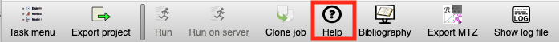

CCP4i2 Road show¶
A collection of introductory tutorials which is used in the 2-hour CCP4i2 Roadshow.
Data Processing and experimental Phasing¶
We will start from the unmerged Gamma Xe data. (1) Run Aimless. (2) Solve the structure by using the Crank-2 pipeline or the SHELXCDE pipeline. Stop after solution. The pipeline should have built a protein model.
Create an i2 project.
Copy the Gamma data files to your project. Utilities ->copy demo data to project ->Gamma The files will be copied to the subfolder gamma in the project directory.
Data reduction. From the “X-ray Data Reduction and Analysis” section of the Task list, create a new “Data Reduction - Aimless” job. Click on Help in the toolbar:  then load the unmerged Xe mtz following the instructions. Note: when a data file is loaded a pop-up box appears asking for provenance about the file. For this tutorial, just click OK, here and whenever this happens! For your real data, add a useful comment.
Experimental Phasing. Help -> Tutorials. Click on link to Gamma. Follow the instructions in GammaXeSAD. Use the Crank-2 or the SHELXCDE pipelines. These again have useful Help information.
MR model selection and creation using CCP4mgMrBump¶
Demonstrates how to generate a MR ensemble or single model from a PDB sequence-based search. Two examples: (1) Gamma is very straightforward with one domain and (2) 5yca a more complex case. Follow the instructions in MGMrBUMP. You may choose to do this in the same project as the “Data Processing and experimental Phasing” tutorial or create separate projects. Depending on the time, we may use Phaser to solve one or both structures.
Molecular Replacement¶
The tutorial will focus on solving Beta-Blip which involves more than one chain type.
Copy the Beta-Blip data files to your project. Utilities -> copy demo data to project -> Beta-Blip The files will be copied to the subfolder beta_blip in the project directory.
Follow the instructions in Section 2 of Molecular-Replacement-ccp4i2.
We will stop after solving the structure with Phaser.
Ligands, Refinement, Validation and COOT¶
Generate a ligand model and restraint dictionary from a smiles string. Starting from a set of merged data with an apo-protein model, locate the ligand position using COOT.
Copy the MDM2 data files to your project.
Ligand building: Help -> Tutorials. Click on link to MDM2. Follow the instructions in LigandTutorial. This ends with a COOT job in which the NUT ligand has been built into the density. Once you are happy with the ligand, you can proceed to refine the structure and highlight likely defects on the model with MolProbity and COOT.
Run REFMAC for 10 cycles. Help available as before. By default, the REFMAC pipeline will run Molprobity as well as additional validation shown in the report.
Click on the COOT follow-on button at the foot of the report. This will display Tables within COOT for the issues raised by the validation tools.
You will have time to work through some of the issues raised by validation.